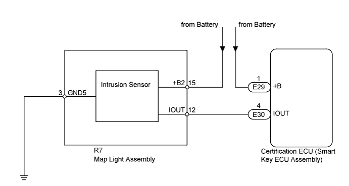
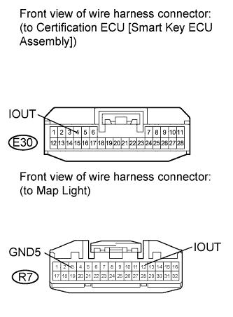

DTC B2764 Short to GND in Intrusion Sensor Signal Circuit |
| DTC Code | DTC Detection Condition | Trouble Area |
| B2764 | After normal/trouble signal is output from the intrusion sensor as result of self-diagnosis, the following malfunction is detected: Terminal IOUT of the intrusion sensor has not received signal for 5 seconds or more. |
|

| 1.CHECK HARNESS AND CONNECTOR (MAP LIGHT - CERTIFICATION ECU [SMART KEY ECU ASSEMBLY] AND BODY GROUND) |
 |
Disconnect the R7 light connector.
Disconnect the E30 ECU connector.
Measure the resistance according to the value(s) in the table below.
| Tester Connection | Condition | Specified Condition |
| R7-12 (IOUT) - E30-4 (IOUT) | Always | Below 1 Ω |
| R7-12 (IOUT) or E30-4 (IOUT) - Body ground | Always | 10 kΩ or higher |
| R7-3 (GND5) - Body ground | Always | Below 1 Ω |
|
| ||||
| OK | |
| 2.CHECK INTRUSION SENSOR (OPERATION) |
Temporarily replace the intrusion sensor with a new or normally functioning sensor (Click here).
Check if DTC B2764 is not output.
|
| ||||
| OK | ||
| ||
| 3.CHECK MAP LIGHT ASSEMBLY (OPERATION) |
Temporarily replace the map light with a new or normally functioning one (Click here).
Check if DTC B2764 is not output.
|
| ||||
| OK | ||
| ||